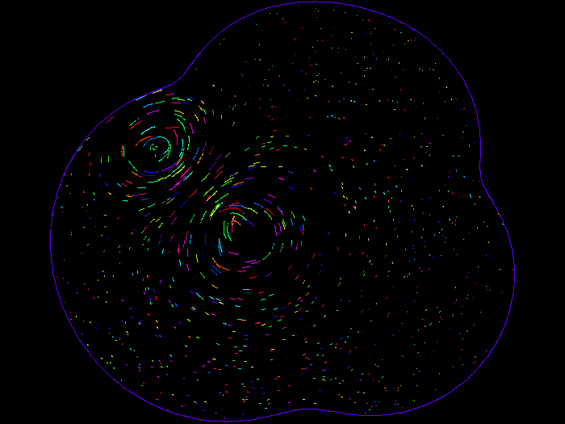
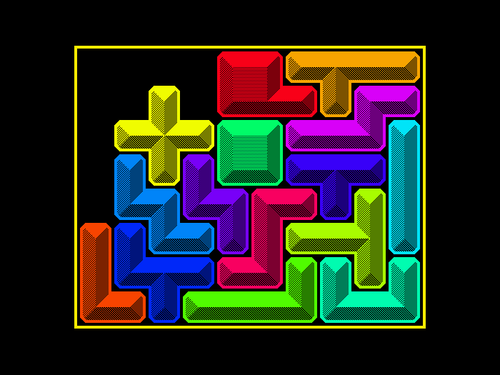

Software
I include here a number of software projects. I would like to thank the
NSF for providing support whilst the
more mathematical of this sofware
was being developed.
There is a Romanian translation courtesy of Science Spaces, a Polish translation coutesy of Valeria Aleksandrova, a Kazakh translation courtesy of John Vorohovsky, and a Russian translation courtesy of Nikolay Pershikov.
Code for the complex arcsine, arccosine and arctangent functions
I have written code to implement the complex arcsine, arccosine and arctangent functions casinh, casin, cacosh, cacos, catanh, catan. Currently I intend for these to become part of the FreeBSD operating system, but I would be willing to work with anyone who wants to add it to other systems (e.g. glibc). The code is based on the paper "Implementing the complex arcsine and arccosine functions using exception handling" by T. E. Hull, Thomas F. Fairgrieve, and Ping Tak Peter Tang, published in ACM Transactions on Mathematical Software, Volume 23 Issue 3, 1997, Pages 299-335, http://dl.acm.org/citation.cfm?id=275324.
The code is available at http://people.freebsd.org/~stephen/ in the files catrig.c, catrigf.c, catrigl.c. Tests indicate that both the real and imaginary parts of the results are good to within 4 ULP (units in the last place). They are certainly much more accurate than the current implementations in glibc or NetBSD. The code catrig.c is fully commented, and the code catrigf.c and catrigl.c are float and long double (80 bit and 128 bit) versions respectively. (The float version has occasionally given results whose accuracy is slightly worse than 4 ULP.) See https://wiki.freebsd.org/Numerics for progress on numerics in FreeBSD.
The algorithm in the paper by Hull, Fairgrieve and Tang is also used in the Boost libraries: http://www.boost.org/doc/libs/1_53_0/boost/math/complex/asin.hpp. Their implementation is more faithful to the original algorithm then my code. The Boost libraries also contain code for atanh and acos. The last two algorithms needed fixes to be accurate in some edge cases: see https://svn.boost.org/trac/boost/ticket/7290 and https://svn.boost.org/trac/boost/ticket/7291.
Xkbset
This is a program to help manage many of the XKB features of X window.
This includes such features as MouseKeys, AccessX, StickyKeys, BounceKeys, and
SlowKeys, as described below. It includes a
gui program to help with MouseKeys acceleration management. The program
is available in source form here.
You may also like to look at other similar programs:
(MouseKeys is buggy with respect
to acceleration: see bugfix-for-mousekeys.
This is partially fixed in XFree86 version 4.0.2, and fully fixed in version
4.0.3.)
Fluids Programs
Here are some programs to simulate fluids. They are all written for Unix.
-
The screensaver
xlockmore
contains the mode euler2d, which simulates the 2D Euler
equation. Use version 4.17 or above (but version 4.18 contains
significant optimizations). It may be obtained from
here
or here.
This has now also been incorporated into the
xscreensaver
program.

-
I have written a few programs to simulate the Navier-Stokes equations
with periodic boundar conditions. They make great use of the
Fast Fourier Transform package
fftw.
For displaying, they make use of the OpenGL protocol - I use the
Mesa package.
They are available here.
AccessX for X Window
Note added August 2012: the information in this section is very old and mostly out of date.
Here I describe AccessX, an option built into X Window version R6 and above.
This helps users who have certain disabilites with respect to their abilities
to use the keyboard or a mice. If you have other info to put on this
page, please tell me about it:
stephen@math.missouri.edu.
For certain versions of X Window you
may find a built in program called accessx that allows you switch
these options on and off. This includes
IRIX
6.5 for the SGI, possibly something on the
Sun,
and DECwindows.
For other versions of X, there are now a number of other programs that
do the same task:
-
XFree86-4.0 has a utility xf86cfg which allows users
to set some of the accessx options.
-
A command line interface program xkbset written by me.
-
A very limited, but rather easy to understand, program
cheap-accessx-0.1.tar.gz.
-
Apparently Release 6.6 of X Window (Version 11)
will include the Sun and DEC/Compaq-donated
accessx program. Look for this when your favorite distribution catches
up to X11R6.6.
There are very nice instructions on the use of the various accessx features at
http://ccpc5.unican.es/doc/du-40D-doc/AQ917BTE/DOCU_013.HTM, and also a detailed
description (including many details about MouseKeys Acceleration) in
the document
ftp://ftp.x.org/pub/R6.4/xc/doc/hardcopy/XKB/XKBlib.ps.gz.
In particular, if the accessx feature of X is switched on, many features
of accessx can be switched on without running any special program, viz:
-
Sticky Keys: So for example, to get @, press the SHIFT key, release
it, and then press the 2. To write XKB, press SHIFT twice, then xkb,
then SHIFT again. Works also with CONTROL and ALT. To switch
this on/off, press the SHIFT key 5 times.
-
Slow Keys: Causes the keys to work only if they are pressed for a
certain amount of time (so accidental key presses don't register).
To switch this on/off, press the SHIFT key for 8 seconds.
-
Mouse Keys: The numerical key pad may be used as well as the mouse
to move the cursor. To switch this on/off, press in this order (holding
them down until you are done with the third key): Left SHIFT key, left
ALT key, NUM-LOCK key.
(Actually Mouse Keys is buggy with respect
to acceleration: see bugfix-for-mousekeys.)
There are several ways to switch this accessx feature on. For example:
-
When starting X, have the +accessx switched on. For example,
if you start X with the command startx, do it like this:
startx -- +accessx
-
If you use X via xdm, then look for a file called Xservers
in a directory that might be called /usr/X11R6/lib/X11/xdm, and
make sure it has a line like
:0 local /usr/X11R6/bin/X
+accessx
(OK, I have not tested this - maybe someone else would test it and tell me
if it works.)
-
Use my utility xkbset as follows:
xkbset a
-
If you are using XFree86 version 4.0.2 or greater: as root
edit /usr/X11R6/lib/X11/xkb/X0-config.keyboard (or
wherever this file is), and make sure that AccessxKeys
appears in a line like
Controls += RepeatKeys + MouseKeys + MouseKeysAccel + AccessxKeys
(this file can be created by xf86cfg, or you can just create it
yourself).
Natural Math
This is a program that allows one to write mathematics as it is spoken,
and converts it to LaTeX so that it may be beautifully typeset. This
was originally written to help disabled people to write mathematics.
It is called Natural
Math.
Polyomino Puzzles
Here
is a suite of programs to solve puzzles in which polyominoes are placed
in a geometric shape (usually a rectangle). Some of these were used
to solve some of the problems at
http://www.xs4all.nl/~gp/PolyominoSolver/Polyomino.html.
If anyone finds bugs in my programs, or can
provide some independent verification of some of my numbers, I would
appreciate it.
The screensaver
xlockmore
contains the mode polyominoes, which solves various polyomino
puzzles in real time. Use version 5.01 or above (but version 5.00
has a smaller problem set called pentominoes).
It may be obtained from
here.
This has now also been incorporated into the
xscreensaver
program.

The Dispense Package
This is a package of programs that allow one to distribute a progamming
task (for example, counting twin primes) over several computers. It
is described at
http://faculty.missouri.edu/~stephen/software/dispense/. Note added Aug 22, 2012: this software doesn't seem to work with more recent versions of the Berkeley Database code. Since this code was written, there is probably other, much better stuff out there to solve this problem.
The Spherical Package
This computes PDE on spheres using spherical harmonics. It is described at
http://faculty.missouri.edu/~stephen/software/spherical/.
The "Fast Exact Closure" Package
This computes the "Fast Exact Closure" for Jeffery's type equations. It is described at
http://faculty.missouri.edu/~stephen/software/fec/.
Home page